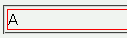
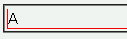

子孫に置換要素以外のインライン要素だけを含む相対配置のブロック要素にline-heightプロパティが指定されているとき（または、親要素から継承しているとき）に、上ボーダーの上端が消えてしまう。
<div style="line-height:1.2; position:relative; border:1px solid red;">A</div>
四方のボーダーの太さはいずれも1pxです。
Moz1.0での表示（標準モード）
WinIE6.0での表示（互換モード）
相対配置する要素の子孫にブロック要素や置換要素を置くようにすれば不具合を回避できます。
<div style="line-height:1.2; position:relative; border:1px solid red;"> <p>A</p> </div>
A
WinIE6.0では標準・互換モードともに不具合の発生が確認されました。